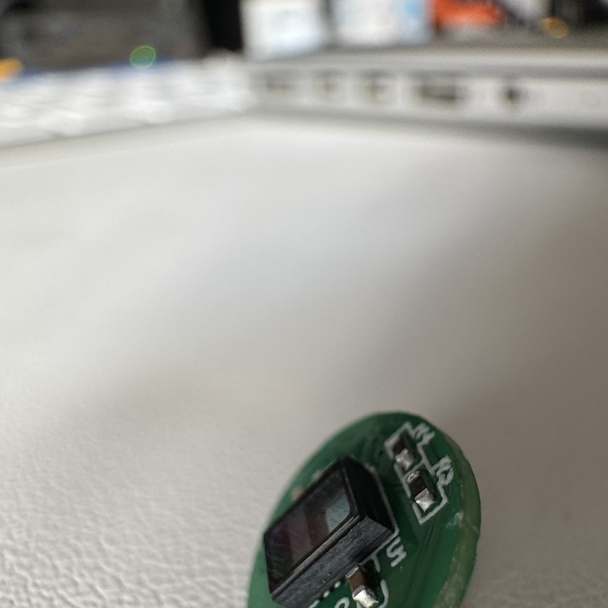

Mateo Mamaladze
Student engineer·Founder·Maker
Some people look at the peaks. He builds the way up.
be·grei·fen
German, verb
1. to grasp — to take hold of with the hand
2. to understand
One language insists that holding and understanding are the same act. Everything here starts from that: take what is sealed — a molecule, a market, a machine, an institution — and put a handle on it.
Matter
Machines for places hands can't reach. A rover built for volcanic terrain. A humanoid robot younger students learn to build. Eight designs published before fifteen.
Body
For a century, the watch was a machine you could open. He traded vintage movements at fifteen — then began building the wrist's successor: OpenPulse, a wearable whose data belongs to the wearer.
Mind
Knowledge you can hold. A VR laboratory that makes molecules graspable. Platforms that map the way to mentors, competitions and licenses.
Society
Institutions answer to those who ask. The student with the microphone at a Munich Security Conference side event. Talks on societal resilience. Tools that protect and include.
The record follows.
Matter
Machines for places hands can't reach.
An iris that grips.
A wheel that changes shape for terrain that changes its mind — designed, printed and geared by hand.
MAGMA.
A rover built for DLR's Vulcano Summer School challenge: expandable wheels, environmental sensors, a body shell — made with Juan and Roman.
Fig. 01-A — wheel, contracting · expanding
Volcanic ground is closed terrain — too hot, too loose, too poisonous. So the instrument goes instead: gas sensing, adaptive wheels, and an engineering drawing for every part.
magma_engineering_revD.pdf ↗To teach a machine to grasp,
you must first understand grasping.
Since 2024 he has led a school robotics course, coordinating younger students through the mechanics, electronics and software of a humanoid robot — servo by servo, joint by joint.
Body
The wrist, reopened.

For a century, the thing on your wrist
was a machine you could open.
At fifteen he began trading vintage watches — sourcing, valuing, negotiating, restoring trust in old machines. A registered business at sixteen; more than €17,000 in revenue.
Then he started building what comes after the watch.
OpenPulse.
A wearable that opens.
Choose your sensors.
Swappable pucks — optical pulse, temperature, environment — click into a platform you are allowed to understand.
Raw data belongs to the wearer. No sealed ecosystem, no subscription wall.
It worked.
1st in Europe — Blue Ocean 2026 1st, Health & Lifestyle — Startup Teens Top 14 — Jugend gründet


Mind
Knowledge you can hold.
Chemistry has notations.
BeGreifbar gives them a body.
With Juan and Roman, he built an immersive laboratory where molecules, fields and forces can be picked up, rotated and taken apart — roughly 31,000 lines of code, studied in a real research process through Jugend forscht: regional round München-Süd, then the Bavarian state round.
The same instinct runs through everything he builds for other learners — mentoring platforms, competition maps, flight-theory simulators, an e-reader that opens Goethe.
Society
Institutions answer to those who ask.


The pattern doesn't change with scale: find the sealed system, ask it a question, hand the answer on.